Full paper in compressed Postscript *.ps.gz
In the report long-term experience of the authors on development of algorithms and automation of a research of complicated mechanical and controlled systems is considered. We have created specialized systems of computer algebra and software packages "Dynamics", "Mechanic", "Normalization" possibility and the algorithms of which are described in [1-5 and other]. The base of the algorithms, which are realized in these packages, was formed by classical methods of analytical mechanics and stability theory.
The indicated software allows after geometric description of a system of rigid and deformable bodies to make their finite-dimensional models as the Lagrange equations of the second kind (in generalized coordinate) and Euler - Lagrange (in quasi-coordinates) ones and also will obtain the linear equations in a neighbourhood of steady-state motion. The application packages differ from another software by that they contain large units, permitting to carry out in a symbolic form qualitative researches of the differential equations : to build the first integrals, linear and quadratic in generalized velocities (quasi-velocities) ; for linear (ignorable) and quadratic integrals to determine invariant manifolds of steady motions and to investigate their stability ; to fulfill normalization in Poincaré sense in a neighbourhood of singular points of the equations.
While solving of these problems the computer algebra system (CAS) fulfills : operations of matrix - vectorial algebra, partial differentiation, expansion of functions in to Taylor series, selection of main diagonal minors, calculation of determinant, evaluation of conditions of a property of having fixed sign of the quadratic forms, replacement and substitution, removal of brackets, collecting terms, trigonometric transformations, symbolic-numerical interface and other. The algorithms of analytical transformations are simplified considering the specificity of the expressions of data domain.
The developed software allows to automatize, and consequently, essentially to speed up processes of modelling and dynamic analysis of complicated systems, to avoid errors at all stages of researches.
At the moment we develop the software "Analysis" for IBM PC/AT on basis of system "Mathematica" [6,7]. In the report we consider some problems and difficulties, connected to application of modern systems of computer algebra for solving mentioned above and other problems of common mechanics and stability theory.
For the package "Analysis" new algorithms for a research in symbolic-numerical form of stability and stabilization of mechanical systems under an operation of gyroscopic, dissipative, conservative and nonconservative positionary forces are developed [8]. Experience, accumulated at creation and maintenance of systems for the analysis of mechanical systems, was transferred by authors to electrical and electromechanical systems. The following operations are fulfilled for these systems :
- the graph of a circuit is analyzed ; - Routh or Hamilton function is created ; - the equations of motion are written in the Lagrange, Hamilton or Routh form ; - the first integrals are created ; - linear in velocities integrals are reduced to ignorable ones.
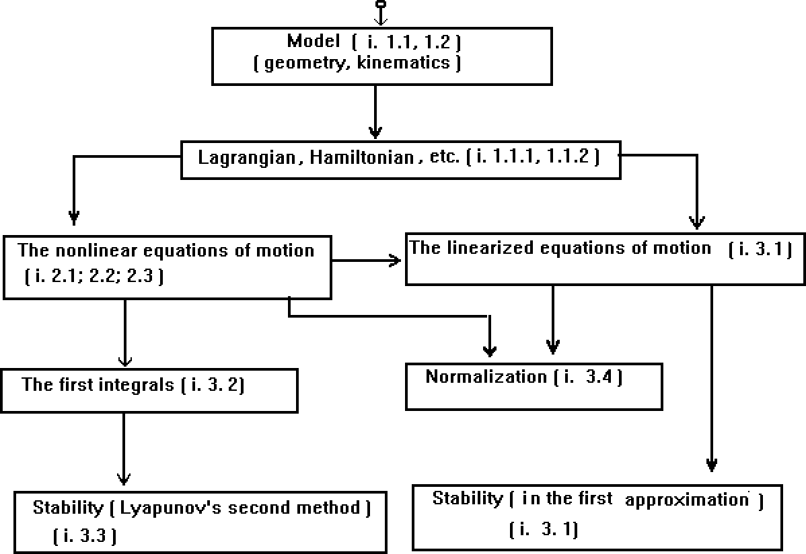
Figure 1.
Our experience with symbolic computation packages allows us to conclude that CAS are perspective tool for researches in the field of theoretical mechanics. Here we will not concentrate on specific software implementations. Instead we will give a brief description of the functionality of mentioned software packages ( Fig. 1 ).
1.1. Model of the mechanical system. The mechanical system is a system of bodies
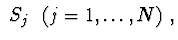
connected by one-two-three-degree joints, i.e. for every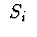
there exists the point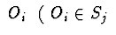
¨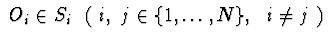
, or joints allowing translational displacements relative to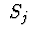
( Fig. 2 ).
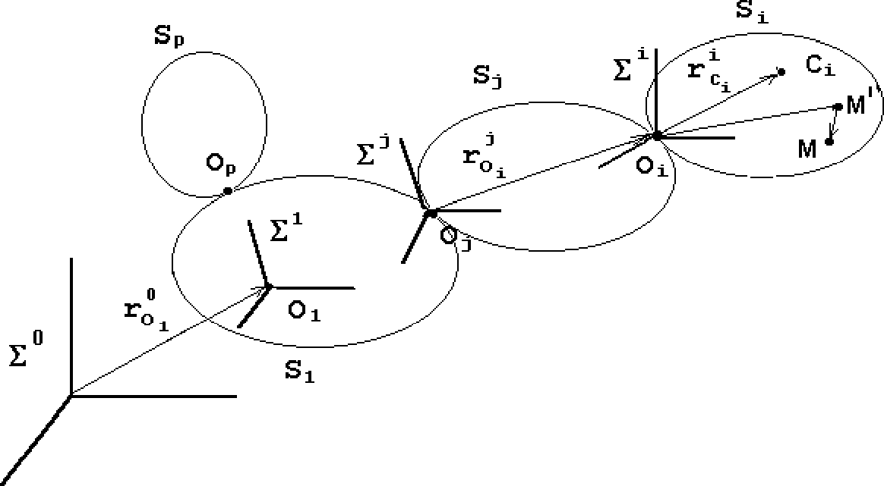
Figure 2.
The body
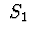
is a carrier,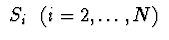
is carried. Let us introduce the systems of coordinates : a system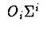
is connected with (with hardening body which will be received if all deformations would be equal to zero); a system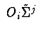
is connected with in a small vicinity of point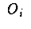
and such that if is an absolute rigid body then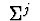
and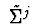
are parallel. The vocation of in the inertial space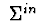
(or in some system of coordinates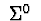
with given motion) assigns by coordinates of point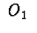
and by matrix of rotation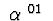
of axes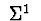
. The location of body assigns by the matrix of rotation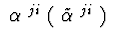
with reference to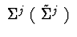
or by coordinates of pole . It is assumed that for non-rigid body in every point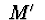
of body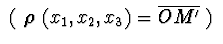
the deviation reflected due to deformation is represented by a vector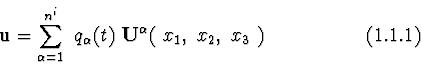
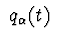
are generalized coordinates of deformations ;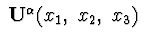
are eigenforms of oscillations or their functions. One defines the choice of and number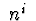
.1.1.1. The kinetic energy of a system. The kinetic energy of a system is calculated as a sum of kinetic energies
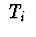
for every body , connected with :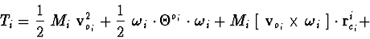
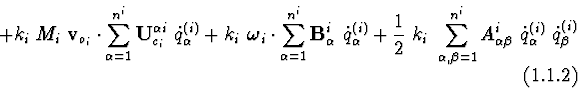
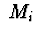
is the mass of the body ;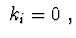
if body is rigid ;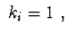
if body is non-rigid;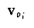
is absolute velocity of point :
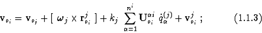
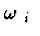
is absolute angular velocity of body :
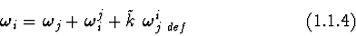
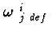
is angular velocity of rotation relative to ;
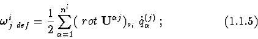
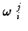
is angular velocity of motion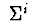
relative to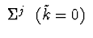
or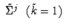
;
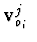
is the relative velocity of point , if moves translationally (or freely) relative to ;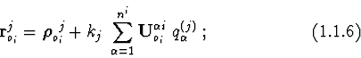
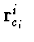
is the radius-vector of centre of mass of the body :
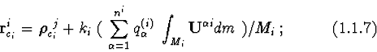
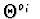
is the inertia tensor of the body relative to :
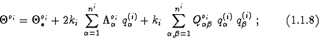
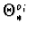
is the inertia tensor of rigid (solidified) body,
1.1.2. The force function of a system.
Let the system is under Newton's gravity ( approximate ) to the motionless
centre
. The force function of a system equals a sum of
force functions
of each body
:
The force function of a body in field of constant gravity
is calculated under the formula :
If body is non-rigid, then the force function of deformation
is assumed as the quadratic form of the generalized coordinates of deformation :
1.2. Description of an electric circuit. Electromechanical analogies [10] allow to use the same apparatus - methods of analytical mechanics - for describing and investigation of both mechanical systems and electric circuits.
Consider a linear electric circuit, in which resistors (R), inductors (L), capacitors (C), power sources of current (I) and voltage (E) are interconnected arbitrarily. For the purpose of describing the circuit let us choose a set of independent variables characterizing its state at any time moment. Such variables may be represented by either currents in the loops or voltages in the nodes or else currents and nodal voltages. Selection of a set of variables defines the structure of the equations.
Consider an algorithm of constructing the Lagrangian for the electric circuit. A set of currents will be used as the state variables. The computations are conducted in the two stages. On the 1st stage, the set of state variables of the electrical circuit is determined by the method of loop currents; on the 2d - the Lagrangian is computed.
The general idea of the method of loop currents consists in decomposing the electrical circuit into independent geometric loops and assigning the current in each of the loops. This problem may be solved via finding a set of fundamental cycles in a graph.
Let us use the graph of the electrical circuit ( Fig. 3 ) for finding the fundamental cycles.
Let be a list of constructed fundamental cycles, S contains a list of contiguous vertices for each of the graph's vertex, D a list "free" graph's edges: , but ( numbers of the graph's vertices, a graph's edge ). The list elements D, S are ordered in accordance with the technique of path-tracing the graph. Let Ø. Let us describe the constructing of a new fundamental cycle.
Choose the 1st element from D and remove it from the list. Using S find the vertex contiguous with . The vertex is called used and is removed from S. In accordance with the same rule find the vertices , etc. Each new chosen vertex shall not coincide with those already chosen. The path traced is stored in the form of a list of pairs .
If on the th step it appears that there is not any unused vertex contiguous with , we return to the vertex and continue the process. When the construction of the cycle is over. The latter is always possible since the graph corresponds to the closed electrical circuit. The constructed cycle is stored in the list . All the elements included in the new cycle are removed from D . If Øthen we select a new element from it and the process of constructing the cycle is repeated.
It may happen that the number of loops constructed by such algorithm is less than that required by the method of loop currents. In this case the list is complemented up to the necessary number under the condition that the new constructed loop does not coincide with any of existing loops.
When denoting by the current in the i- th loop and considering it positive in the edge , when and otherwise negative, we shall find the magnitude of the current in each branch as the sum or the difference of the corresponding loop currents.
According to [10] the kinetic energy , the force
function
, the Rayleigh function
for the linear electrical circuit has the form :
For constructing the function characterizing the state of the nonlinear electric circuit we use the algorithm [11,12].
After an evaluation of kinetic energy and force functions we discover characteristic function of the system and create the equations of motion.
2.1. Lagrange's equations.
Let characteristic function be a Lagrangian
, which is
shown in the form:
2.2. Euler-Lagrange's equations.
Let the configuration of a system be set by independent parameters
and quasi-velocities - linear forms on generalized velocities
(in common case inhomogeneous):
Jt is supposed, that
is nondegenerate.
The linear forms of differentials of generalized coordinates
The kinetic energy of system in quasi-velocities in common case
looks like :
2.3. Hamilton's equations.
Let characteristic function be Hamilton's function
In electric circuits it is often the case that
3.1. Investigations in the first approximation.
The differential equations obtained after their expanding in
series in the neighbourhood of the given or found
steady-state solution may be represented in the form
Now construct the characteristic equation (CE):
3.2. Construction of first integrals for differential equations of motion.
Algorithm to construct first integrals for the systems described is based on
invariant relations (differential consequences) of equations of motion [5].
For equations (2.2.3) we have invariant correlation :
Statement 1. If lagrangian (2.1.1) and kinematic correlations (2.2.1)
do not depend explicitly on time and nonpotential forces
are absent, there exists generalized Jacobi integral:
Statement 2. If for
and
Statement 3. If in stationary mechanical system following correlation
Statement 4. If body system is described by Lagrange equations in
generalized coordinates
and velocities , and lagrangian does not contain coordinates
, there exist ignorable integrals
Let for carrying body of the system generalized coordinates
describe rotational motion,
- motion of point , and
coordinates
describe relative motions of
carried bodies. We choose quasi-velocities for carrying body equal to
projections of absolute angular velocity
and linear velocity
of the point to axes associated
with body. Let quasi-velocities of carried bodies be equal to projections of
relative velocities or to generalized velocities. In these conditions for
Euler-Lagrange equations following correlations take place :
Statement 5. If
, then
Statement 6. If
, then
Statement 7. If
where is a constant matrix
, then
Statement 8. If , then
Statement 9. If
, then
For equations of the form (3.1.1) algorithms of obtaining differential consequences and invariant correlations are described in [6, 8]. For linear systems (3.1.1) obtaining quadratic first integrals can be reduced to systems of linear algebraic equations.
3.3. Investigation of stability by Lyapunov's second method. Invariant relations, first integrals obtained from it and other invariants may be used for finding steady motions or invariant manifolds of steady motions as well as for constructing Lyapunov functions in investigation of stability of the latter [14]. To this end, an algorithm of Routh-Lyapunov's theorem is used. In accordance with the latter theorem we come to the problem of conditional extremum.
Let for the system of ordinary differential equations
In the regular case, for a system of interconnected bodies the steady motions are found as solutions of equations of stationarity of the bundle of first integrals of motion differential equations. Sufficient conditions of stability for these motions may be found as the conditions of sign-definiteness of the second variation for constant values of the rest of the first integrals. This problem has a good algorithm of solving in the case when side by side with the energy integrals there are linear first integrals with respect to velocities or quasi-velocities (e.g. ignorable ones) [2, 4]. In the case, when there are (i) first integrals of another structure or (ii) singularity of the system (2) (this is characteristic of electromechanical systems), difficulties of the investigation increase. When there are no first integrals in the system, for the purpose of constructing the Lyapunov functions in the process of investigation of stability by Lyapunov's method it is possible to use differential corollaries of equations of disturbed motion [6].
3.4. Reduction to the normal form. The preliminary reduction of the system to one of the normal forms is an efficient aid in solving problems of qualitative investigation of ordinary differential equations. Poincare's form [15, 16] is one such normal forms for differential equations of the general form (3.3.1).
Normalization of systems of analytical ordinary differential
equations
As a result, the system of ordinary differential equations
takes the form
In practical investigations the precision of computing of the eigenvalues was chosen Zero and multiple roots were determined with the same precision. Eigenvectors and adjunct vectors were found with the precision of
Linear normalization has been conducted only in the numerical form.
Nonlinear normalization has been conducted by Poincare's method [15,16],
which retains only the resonance terms of the form
where
integer numeric vector of nonnegative indices
of powers of the variables.
Nonlinear transformation is realized in the form of the formal series:
Nonlinear normalization is executed in both numerical and symbolic forms.
With the help of packages in a symbolic form the authors investigated rather large number of concrete mechanical systems. In particular:
- nonlinear equations of motion of a series of robotic systems are obtained (for example, robot - manipulator of 6 links, walking platform on four legs with two degrees of freedom each) ;
- problems of dynamics and stability of steady motions in space systems were considered (for example, satellite with a gravitational system of the stabilization on circular orbit are considered at various control laws by a gravitational stabilizer, gyroscopic frame in Newtonean central field of forces );
- linear equations of motion for a mechanical system with 32 degrees of freedom consisting of 20 absolutely of rigid bodies are constructed.
Application of the software system "Normalization" has allowed us:
- to investigate stability of a nonlinear autonomous mechanical system with two pairs of purely imaginary multiple roots (with two groups of solutions);
- to solve the problem of stabilization of one mechanical Hamilton-type system with the resonance of 1:3 and with nonlinear control.
Let us illustrate our reasoning with a few applied examples of usage of the above software.
Example 4.1.
Let us consider gyroscopic frame, placed in Newtonean central
field of forces.
The mechanical system consists of a carrying frame
(a body with a fixed point) and two identical connected two-degree gyroscopes,
symmetrically installed in a frame (Fig. 4).
Masses and the moments of inertia of housing of gyroscopes are neglected.
Figure 4.
Before exposition of input information about the system we note that the matrix of rotation and relative angular velocities of bodies are not required to be introduce. They are calculated automatically on specific "sequence of rotations". Hereby we specify :
a) Number of axis of rotation (one of numbers 0, 1, 2, 3), i.e. 1 - the rotation is carried out around the axis 2 - around the axis 3 - around the axis 0 - there is no rotation;
b) angle of rotation.
Input data :
Number of bodies in the system : .
Body 1 is a frame. is mass ;
"sequence of rotations" : .
Body 2 is the housing of the first gyroscope, it is connected to the
frame.
;
"sequence of rotations" : .
Body 3 is the rotor of the first gyroscope, it is connected to the second body.
is mass of a rotor;
"sequence of rotations" : .
Body 4 is the housing of the second gyroscope, it is connected to a
frame.
;
"sequence of rotations" : .
Body 5 is the rotor of the second gyroscope, it is connected to the fourth body.
is mass of a rotor;
"sequence of rotations" : .
Program output :
Matrices of rotation :
Relative angular velocities :
The kinetic energy of the system :
£¤¥
are the projections of
absolute angular velocity of the frame on the axes
. They are selected as quasi-velocities.
Approximate force function
(1.1.13) in Newtonean field
of gravitation to the fixed center
The force function of elastic forces of the spring device :
Further four first integral of motion equations (integral of an energy and three ignorable on coordinates ) are found, equations of steady motions and sufficient conditions of stability of steady motions are obtained by computer [17]. All the expressions obtained by computer have the symbolic form.
Example 4.2. The modelling of the electrical circuit consisting of two parts connected inductively (Fig. 5).
Figure 5.
Input data.
The number of parts of the electrical circuit connected inductively: 2
The first part of the electrical circuit:
The second part of the electrical circuit:
The order of path-tracing the graph:
"+" - to trace the graph's vertices in the direction of growth of their numbers ("-" - inverse order).
Program output.
The Lagrange's function:
The Rayleigh's function:
The differential equations of the electrical circuit in Lagrange's form
of 2-d kind:
Example 4.3. In the process of investigation of the phase space of a mechanical or electric system there often appears the need to solve algebraic equations (or those reducible to them). In the contemporary universal computer algebra systems there exists a tool for solving such problems, which allows to simplify such systems. Gröbner's bases or their analogies may be considered as such tools.
In applied problems, direct usage of Gröbner's bases does not always entail in satisfactory result. For example, for the systems containing parameters the investigation requires greater efforts and does not guarantee a success even when a computer is used. In such situations the following technique of analysis of algebraic systems with parameters may be useful.
Let a family of solutions be known for an algebraic
system. The existence of such a family in concrete cases may
be grounded by the mechanical or physical character of the
problem. We take an interest in such solutions of the
system which (i) contain some elements of this family or (ii) adjunct
to the family. Such problems arise in different directions of
bifurcation theory. Now, let there be given a system of
algebraic equations with parameters
Assume that the rank of the Jacoby matrix for the system
(2) with respect to
is and
consider the system of equations
Analysis of the system (3) allows us to find, generally speaking, those relationships between , for which the Jacoby matrix's rank on the chosen family becomes smaller.
These bifurcation values of the parameters may be substituted into the initial system (1), what allows to simplify it and find new solutions or their families.
The proposed procedure may successfully be employed, for example, in analysis of equations of stationarity of mechanical systems' first integrals.
Consider a concrete example of application of above approach in analysis of bifurcations in the neighbourhood of the family of permanent rotations of S.V.Kovalevskaya's top about the vertical axis [14].
To this end, let us compose a complete linear bundle of
the problem's first integrals:
Now write the steady-state conditions  with
respect to the phase variables:
with
respect to the phase variables:
It can be easily determined that the system of algebraic
eqs. (4), (5) has the elements of the family of the body's
permanent rotations about its vertical axis in the
capacity of its solutions:
Having substituted the solutions (6) into eqs. (5),
we obtain the condition for the parameters
The Jacobian for the system (5) with respect to
for the
solution (6) writes:
Hence, for obtaining bifurcation values of the parameters it is necessary to find solutions of the algebraic equations (7), which are complemented with the condition . Furthermore, as obvious from (8), we managed to factorize the expression of the determinant.
Complete analysis of the system (7), (8) is rather
cumbersome. So, we restrict our investigation, while reducing
it to only the first obvious subcase. Consider the following
system of algebraic equations with unknown variables
:
The standard procedure puts the following collection of
equations in correspondence to the system in the capacity of
its Gröbner basis for the corresponding ordering of
unknown variables (computations have been conducted with the CAS
on IBM PC/486):
Analysis of these equations allows one to find the bifurcation values of parameters, which correspond to the branches from the family of permanent rotations (6) of invariant manifolds of the problem's steady-state motions.
With the aid of the CAS it is possible to find all the
solutions of the above nonlinear algebraic system. Without
suggesting the result in complete form, let us outline the
plan of further actions. From the last equation of (9) we
have the following solutions for
:
The penultimate equation of (9) for
gives the following value
:
Having removed , we obtain
1. Bourlakova L.A., Irtegov V.D., Pochtarenko M.V. Use of the symbolic calculations on the computer in some problems of a mechanics. // Proceeding International Conference on Systems and Techniques of Analytical Computing and Their Application in Theoretical Physics. Dubna, JINR, (in Russian)
2. Banshchikov A.V., Bourlakova L.A., Irtegov V.D. Qualitative investigations of Systems with the Aid of Computer Algebra. // IV Intern. Conf. Computer Algebra in Physical Research. World Scientific Publishing Co. Pte. Ltd, Singapore,
3. Banshchikov A.V., Bourlakova L.A., Irtegov V.D. The use of computer symbolic calculations in problems of motion stability. // Computer Algebra and Its Applications to Mechanics. Nova Science Publishers, Inc., USA,
4. Banshchikov A.V., Bourlakova L.A., Ivanova G.N., Irtegov V.D., Usova Y.O. Package of symbolic computations for investigation of dynamics of system bodies. // Application packages. Software of mathematical modeling. Algorithms and algorithmic languages. Moscow: Nauka, (in Russian)
5. Banshchikov A.V., Bourlakova L.A., Irtegov V.D., Novikov M.A. Algorithms of qualitative investigations of complex systems. // Cybernetics and system analysis. (Kibernetika i sistemnii analiz.) (in Russian).
6. Banshchikov A.V., Bourlakova L.A. Information and Research System
"Stability". //Informations RAS. The theory and control systems. (Izvestia RAN.
Teoria i sistemi upravlenia.)
 (in Russian).
(in Russian).
7. Irtegov V.D., Titorenko T.N . On the modelling and the research of some problems with the use of computer algebra. // Programming. (Programirovanie.) (in Russian).
8. Banshchikov A.V., Bourlakova L.A. On algorithms of symbolic computation at the research of the stability. // Programming. (Programirovanie.) (in Russian).
9. Lurie A.I. Analytical Mechanics.- Moscow: Phizmathgiz, 1961.
10. Hantmaher F.P. The lectures on analytical mechanics. Moscow: Nauka, 1966. (in Russian)
11. Brayton R.K., Moser J.K. A theory of nonlinear networks - 1 //Quaterly of Applied Mathematics, 1964, vol.22, 1, p.1-33.
12. Brayton R.K., Moser J.K. A theory of nonlinear networks - 2 //Quaterly of Applied Mathematics, 1964, vol.22, 2, p.81-104.
13. Titorenko T.N. The Hamilton's equations in the case of the degenerated dynamic systems. //Thesises of the reports of the 4-th International conference of women-mathematicians. Volgograd, 1996, p.122-123. (in Russian)
14. Irtegov V.D. Invariant manifolds of stationary motions and their stability. Novosibirsk. Nauka. 1985. ( in Russian )
15. Poincare H. The new methods of celestial mechanics. Moscow: Nauka, vol.1, 1971. (in Russian) ( Les méthodes nouvelles de la Mécanique céleste, t. 1. Paris, Gauthier-Villars, 1892.)
16. Bruno A.D. The analytical form of differential equations. //Proceeding Moscow mathematical society, 1971, vol.25, p.119-262. (in Russian)
17. Banshchikov A.V. Research of a stability of gyroframe by tools of computer algebra. // Mathematical modelling. (Matematicheskoe modelirovanie.) (in Russian).